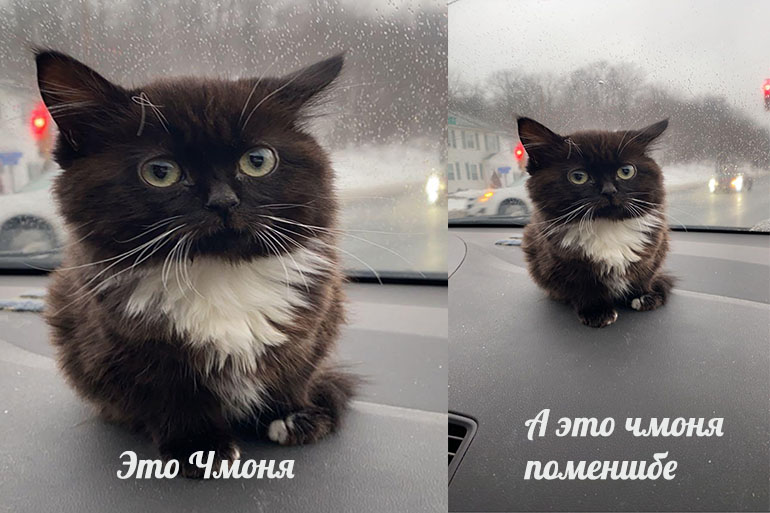
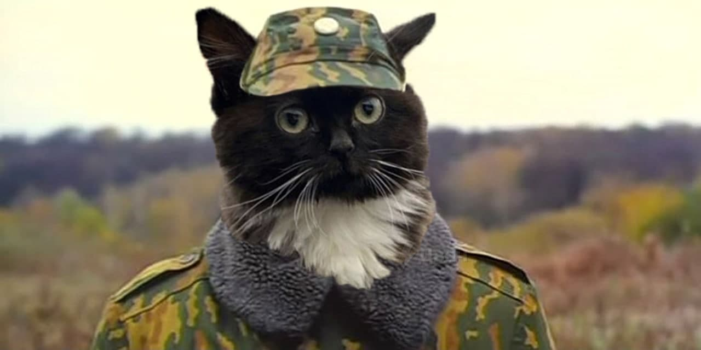

Оригинальное фото котенка, сидящего на панели машины, появилось на Reddit еще 20 февраля 2021 года. Автор снимка – хозяин питомца, пользователь с ником f3I2g. Настоящее имя кошки (это девочка) – Вирго (Virgo). Реддитор и ранее выкладывал снимки своего котенка. Самое ранее фото было опубликовано 2 октября 2020 года. На нем Вирго совсем крошечная. Судя по всему, f3I2g намеренно хотел зафорсить мем со своим питомцем. Он много раз публиковал картинки с Вирго и просил реддиторов зафотошопить кошку. Тогда-то и появились первые мемы с животным.


В апреле 2021 года фото Вирго, сидящей на панели машины, стало вирусным. Его начали публиковать развлекательные сайты в различных подборках. Тогда же стали появляться и первые полноценные мемы. Например, в паблике Mew News. В конце декабря 2021 года котенок Вирго стал популярным в рунете. Его фото начали форсить на Дваче и в твиттере. Например, пользователь @antipillz добавил к снимку слово “едем”. Этот твит набрал 6 тысяч лайков и положил начало глобальному форсу. 22 декабря у котика появилась альтернативная кличка – Чмоня. Именно так подписал картинку фильтр, определяющий предметы по фото.